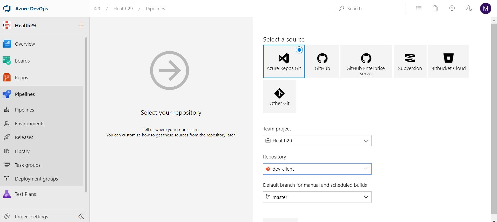

1.3. Build and deploy environments¶
The architecture of our Webapp follows the client-server model. So, we use:
Angular 5 framework for the client.
Nodejs for the server.
According to this, different commands will be used to perform the build and deploy tasks of each of the environments. The following image shows a scheme with the steps to perform the different tasks ( execution, build and deploy) in a particular environment, “x”. All these are analogous in the three Health29 environments: development, production and test.

In this section we will explain the procedure to follow to perform each of these tasks. Therefore, the following section has been divided into sections to detail the specific steps for each of them.
1.3.1. Execution.¶
To run one of the application environments on our machine and be able to perform the implementation and testing tasks, based on the technologies chosen in our client-server model, we have to perform the following steps:
The server is designed in nodejs v10.16.3, so it will be executed from the node console with the corresponding command.
As the client is designed in Angular 5, we will use Angular Cli executing the corresponding script.
So, the first thing to do is to launch the server with “npm run serve”.
Then, we will see how to launch the client. To do this, first it is necessary to understand the configuration and architecture of the workspace of Angular’s projects. In the file package.json we will find the different scripts that have been designed to perform different tasks on the project, such as: the execution, the testing or the build of it.
"scripts": {
"ng": "ng",
"start": "ng serve",
"build": "ng build --prod",
"test": "ng test",
"lint": "ng lint",
"e2e": "ng e2e"
},
In this case, to execute the client of our application we use the command: ng serve.
With this, we will have the Health29 application running at http://localhost:4200/.
1.3.2. Build: scripts.¶
The build is done on the Angular client. As seen in the previous section, using the scripts defined in the package.json file, uring development we’ve been using the ng serve command to build, watch, and serve the application from local memory. But when we are ready to deploy, however, we must use the ng build command to build the app and deploy the build artifacts elsewhere.
Both ng build and ng serve clear the output folder before they build the project, but only the ng build command writes the generated build artifacts to the output folder.
The output folder is dist/project-name/ by default. To output to a different folder, change the outputPath in angular.json.
As we saw in the diagram shown at the beginning of this section, by running ng build –prod we minimize and compress the code. This command will create a new folder called dist, and it will have the project optimized. This dist folder will be the one uploaded to the root of the node server that manages the API. It will also be used to create the mobile apps, adding it to the www folder of the cordoba project.
1.3.3. Deploy.¶
The deploy tasks can be executed according to the interactions in the master branch of each project. That is, you can configure the listening of the push or commits in the master branch of the project server of a specific environment to automate the deploy of this environment.
As our server is created in node.js we can use Azure’s continuous deployment service for our App Service. In particular, we are going to use the integrated Kudu App Service compilation server for continuous deployments. This configuration is explained in the next subsection.
However, it should be noted that what has been explained so far is not the best option. That is to say, to carry out the tasks of build and deploy of the environments, as it will be explained in the following section, there are better mechanisms that facilitate the work and with which the process is assured avoiding errors.
1.3.3.1. Kudu App Service.¶
Access Azure/ App Service/app service name/Deployment slots:

Select the slot you are going to work on. Go to App Service build service (if the slot was already deployed, click on disconnect):

On the Configure page, select the Azure DevOps Organization, Project, Repository, and Branch you want to deploy continuously. After you configure the build provider, review the settings on the Summary page, and then select Finish. New commits in the selected repository and branch now deploy continuously into your App Service app. You can track the commits and deployments on the Deployment Center page.
1.3.4. Semi-automation of processes: Azure Pipelines.¶
To deploy one of the environments, we could use Azure Pipelines.
The architecture proposed consists of the construction of CI/CD pipelines which helps you automate steps in your software delivery process, such as initiating code builds, running automated tests, and deploying to a staging or production environment. Automated pipelines remove manual errors, provide standardized development feedback loops and enable fast product iterations.
Thus, the corresponding pipelines for build and deploy the environment with the changes made should be executed manually. That is, we have 4 pipelines available in the project: one for the client and one for the server, of develop and test environments.
Develop environment pipelines: Health29-dev-cli-CI and Health29-dev-server-CI
Test environment pipelines: Health29-test-cli-CI and Health29-test-server-CI
The pipelines of the production environment were not implemented but it is recommendable since deploy is a critical task.
For convenience, both build and deploy tasks have been added to these pipelines. In this way, when you want to update any of the environments, you only need to execute the client and server pipelines, in that order. It is important to respect the order since when the build tasks are included, as indicated in the previous sections, it will be necessary to update the node server root with the content of the last client compilation.
It is important to emphasize here that the title of the section indicated that we make a semiautomation of the processes, this is due to the fact that the execution of the pipelines is manual.
1.3.4.1. Setup Azure Pipelines.¶
Starting from an azure app service and an azure devops project created, the pipelines are implemented as explained in this document with some modifications since, as we have said, the execution of the pipelines will be manual.
1.3.4.1.1. Pipeline for Server code¶
Access Azure/ App Service/app service name/Deployment slots:
Select the slot you are going to work on. Go to deployment center (if the slot was already deployed, click on disconnect):
Click on azure repos

Select azure pipelines and configure and finish. Now go to azure devops/pipelines. A new pipeline should be created and we must replace the content of the /dist folder by the last compiled version of the client


1.3.4.1.2. Pipeline for Client code¶
Go to Azure DevOps. In the left navigation, select ‘Pipelines’. Then click ‘Builds’. Now you can see, ‘+ New’ drop down. Click it and in the list, select ‘New build pipeline’.

Then it will take you to select the repository, where your project is hosted. Here select ‘Use the Classic Editor’.

Then after, you will take to select the Project, and the Branch, which the build pipeline works on.

Next it asks to select template. Select, ‘Empty Job’. Now you can see the screen, where you have to say the steps to take, to build the project. And with this we would have the Pipeline created. Now we have to add Task to perform the different functions that we want to execute in the call to this Pipeline. In general, the first thing to do is to indicate that we are going to use Node and its version and download all the libraries we need:
Install Node: Type: ‘Node.js’ in the Search box. Select Node.js tool installer and configure it with selecting a version (We will use 8.9.3 version of Node.js)
When we have installed Node.js we can use the commands. So, type ‘npm’, in the Search box. Add ‘npm’. Then you can see the panel, where you can define the Task.
Display Name — Name of the Task. ( Display Purpose)
Command — What the task has to do. ( install = npm install, custom = customized command )
Working folder that contains package.json — Where is package.json is located. ( you can locate to package.json by clicking …. in the right side )
The commands we’ll use are Angular CLI 5 installation and the Angular packs (node modules)
The next steps would be to include the Tasks with the functions we want to perform during the Pipeline execution. In our case: build and deploy tasks. The build command is executed by calling the corresponding script that has been programmed in the client code. In this case, since the client is programmed in Angular, this is defined in the package.json file:
"scripts": {
"ng": "ng",
"start": "ng serve",
"build": "ng build --prod",
"test": "ng test",
"lint": "ng lint",
"e2e": "ng e2e"
},
And this script will execute the “ng build” command configured for the project environment (in environment folder). The task of deploy will be to save the contents of the dist folder that has been generated after the client build. This is the one that will be included later in the server to make the environment deploy.